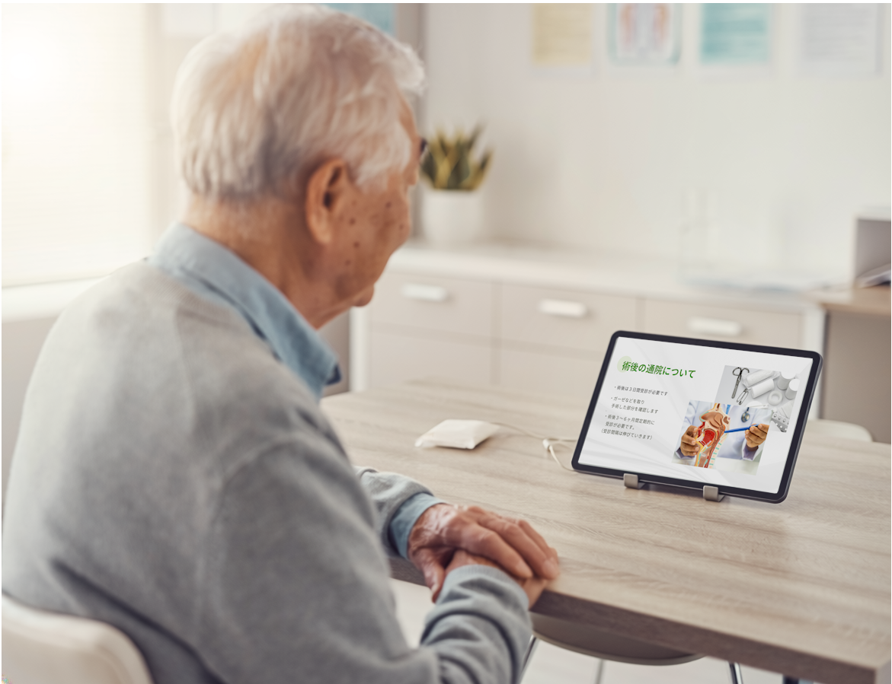
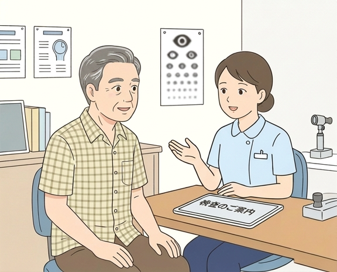
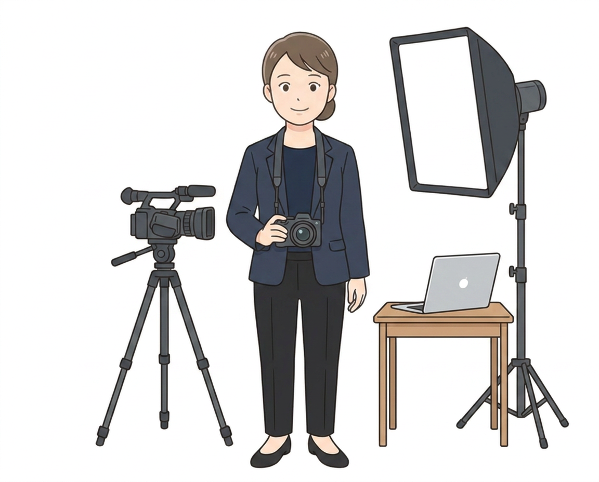
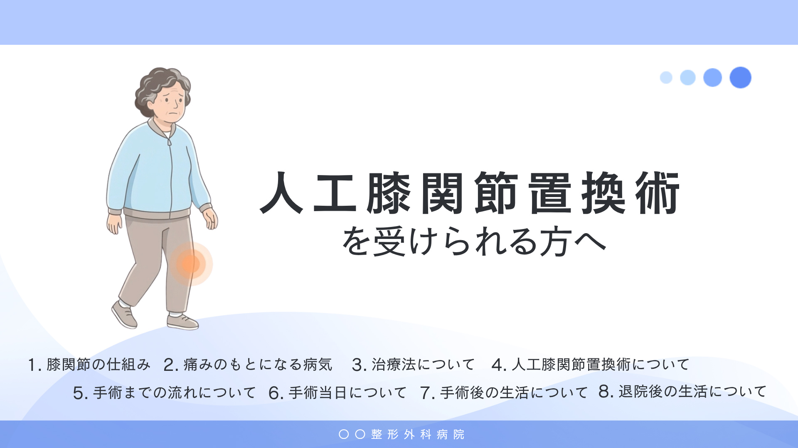
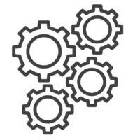
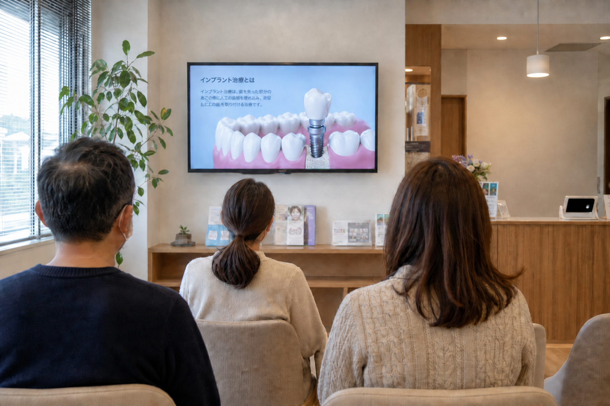
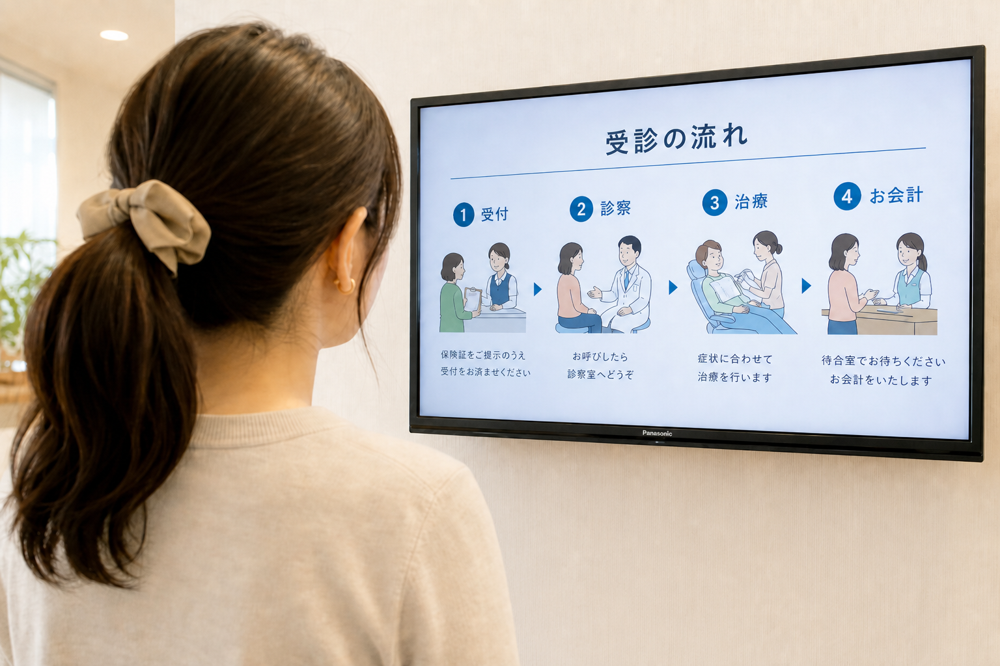

患者説明時間を削減し医療現場の業務負担を減らす
看護師がつくる患者説明動画を
買い切り・低価格で制作
説明業務の質と効率を同時に向上
現場の看護師が医療知識と患者目線を活かし、
説明の手間を最小限に抑える、伝わる動画を制作します
患者さんへの説明のお悩み
説明業務に
こんな課題を感じていませんか
-
説明に時間がかかりすぎる
患者さん一人ひとりに丁寧な説明を行うほど、
本来の業務時間が圧迫されていませんか。
説明の質を保ちつつ、効率化したいという現場の負担は増すばかりです。 -
説明の質にばらつきがある
担当者によって
説明内容に差が出てしまい
患者さんの理解度の
ばらつきや患者さんからの
「聞いてない」に
困っていませんか。 -
医療知識のある制作会社が見つからない
動画制作を外注しても、
医療の専門知識がないと
意図が伝わらず、
修正に手間がかかることも。
結局、院内の負担が減らないという問題が起こりがちです。
そのお悩み、現役看護師が制作する
「伝わる患者説明動画」が解決します。
説明業務の質と効率を、
同時に向上させることが可能です。
nARKの解決策
看護師だからこそ
「伝わる」動画が作れます
-

説明時間を短縮し、業務効率化を実現
動画で一元的に説明することで、個別の説明時間を大幅に削減。医療従事者は本来の業務に集中でき、人手不足や多忙な状況下での業務負担軽減に貢献します。買い切り型で永続的に活用可能です。
-
患者さんの「分からない」を「分かった」に
現場で患者さんと向き合ってきた看護師が制作するため、どこで疑問が生じやすいか、どこを丁寧に伝えるべきかを熟知しています。専門用語をかみ砕き、患者さんの不安に寄り添う言葉で、理解度と安心感を高める動画を制作します。
-

医療知識と動画制作スキルを併せ持つ専門性
現役看護師が監修・制作するため医療知識・表現の正確性は担保。さらに、動画制作経験も豊富。分かりやすく、伝わる映像表現で、質の高い動画を迅速に提供します。
nARKの説明動画の導入メリット
具体的なメリット
| 説明にかかる時間を大幅に削減し、本来のコア業務に集中できる | |
| 説明の質を均一化し、患者さんとの認識齟齬リスクを低減する | |
| 医療従事者の業務負担を軽減でき、働きやすい環境づくりに貢献 | |
| 看護師視点の丁寧な動画で、患者さんとの信頼性向上にもつながる | |
| 必要な動画だけを単発・買い切りで導入でき、高いコストパフォーマンス |
|
 動画サンプル 動画サンプルをここに配置します |
看護師が作る伝わる患者説明動画制作現場のニーズに応える、手軽で高品質な動画制作サービス 現役看護師が、患者さんの疑問や不安に寄り添い、 |
|---|
-
ヒアリング・ご要望確認
ZOOMまたはメールで、動画の目的や対象患者、
伝えたい内容などをヒアリング。
忙しい院長・担当者様の手間を最小限に抑え、
「このパンフレット・資料・H Pの内容を
患者さん説明用の動画にしてほしい」などの
ご要望でも的確に意図を汲んだ動画制作が可能です。 -

構成案・台本作成
看護師視点と医療知識に基づき、患者さんに最も伝わる構成案と台本を作成。医院様で実際にお役に立つ動画構成を作成します。専門用語は分かりやすくかみ砕き、患者さんが理解しやすい構成を制作。
-
動画制作・納品
アニメーション付きのわかりやすく高品質な動画を制作。納品後1年間の修正サポートもご準備しておりますので、安心してご制作いただけます。
選ばれる理由
他の制作会社にはない
nARKの看護師制作ならではの強み
-
REASON
01圧倒的なコストパフォーマンス
月額制のDXツールとは異なり、必要な動画を買い切りで制作。
他社の１月あたりの料金(3~5万円)と同等のご予算で、
高品質な動画を永続的に利用可能です。
初期費用やランニングコストを抑えたい医療機関に最適です。 -
REASON
02作った動画を常に最新の状態で使い続けられる
必要な動画本数だけ、無駄なく発注いただけます。さらに制作後もバージョンアップサポート(年額8,800円〜)にご加入で、テキストやイラストの修正、情報更新にも柔軟に対応。常に最新かつ正確な情報を提供し続けられる安心のサポート体制です。
-
REASON
03現場を理解した看護師による制作
何百回と実際に患者さんに説明をしてきた看護師が、患者さんの視点と医療知識を活かし、医療現場で役に立つ、かゆいところにまで手の届く動画を制作します。１言で８割わかる現場経験の肌感を活かし、医療機関様の手間を最小限に抑えつつ、医療広告の表現にも配慮した、本当に伝わる動画を迅速に提供します。
このような医療機関様におすすめです
患者説明の質向上や業務効率化を検討している病院、クリニック。特に、説明に時間がかかる、同じ説明を毎日繰り返している、説明業務の負担軽減や質均一化を図りたいとお考えの医療機関に最適です。人材不足やコスト削減の観点から動画による効率化を急務とされている場合にも、買い切り型の本サービスは有効な解決策となります。
運営者情報
医療者の負担を軽く、
患者さんの不安も軽く。
-
nARKについて
このサービスは、看護師として8年間、現場で働いた経験から生まれました。
医療現場の負担が大きくなるなかで、医療者が思うような医療の提供や説明に時間を割くのは、決して容易いことではありません。その現実を、私は現場で肌で感じてきました。
患者さんは不安や疑問点を持ったまま治療に進み、医療者は限られた時間のなかで最善を尽くそうとする。この両方の負担を、動画は静かに支えることができます。医療現場で働く人たちの手を少しでも軽くしながら、患者さんが安心して医療を受けられる。それが、私が目指すサービスのかたちです。 -
これまでの制作実績
これまで制作した患者説明動画は、すべて満足度★5の評価をいただいています。患者説明動画の他にも、医療機関から中小企業まで幅広い分野で映像制作を担当しています。私は熊本を拠点に活動しておりますが、熊本台湾映画祭のPR動画制作など、多くの人の目に触れる場にふさわしいクオリティと信頼性が求められる仕事を手がけています。
活用イメージ
以下のような場面での
活用が喜ばれています
同じ手術・治療の説明を繰り返す必要がある病院様白内障手術やインプラント、自由診療など 例えば、白内障手術の説明は、点眼、当日の流れ、術後にやっていいこと・ダメなこと、運転の再開まで、毎回同じ説明が必要になります。これら説明を動画にすることで患者さん一人当たり約10分の説明時間の削減が期待できます。特に、外来患者さんが多く業務の効率化が重要な医院様におすすめです。 |
|
 |
待ち時間を活用して患者教育や治療の選択肢の案内病気や症状について理解した後「この治療もありだな」と自然と思ってもらえる 待合のモニターで、よくある症状や、なぜそうなるのか、どんな治療があるのかを先に見てもらうと、診察室に入ったときに「さっきのモニターの治療はできますか」と、自由診療も診察の入り方が変わります。 |
|---|
|
 |
待ち時間を活用して患者さんの満足度を高めたい病院紹介、院長紹介、受診時の注意点やお願い、お知らせなど 診察の流れや医院の理念、予約の案内などお知らせを1本の動画にして、待合で見てもらうことで患者さんの待ち時間のストレス軽減、医院への信頼関係構築につながります。 |
|---|
料金プラン
高品質な説明動画を、手軽な買い切り価格で
医院様からの提供素材で制作プラン |
人気プラン Nsクリエイターにお任せ/
|
SNSでも活用できる完全オリジナル動画制作プラン |
|---|---|---|
ご提供いただいた写真・テキストを使って、シンプルな動画を制作するプランです。 |
手術・検査・自由診療など、患者さんに理解してもらいたい内容を動画化。いただいた資料から、動画の作成が可能です。 |
医院の世界観に合わせて、一から設計する完全オリジナルのアニメーション動画。キャラクター・トーン・構成まで貴院専用に制作します。患者さんへの説明はもちろん、HPやSNSでの医院ブランディングにも活用できます。 |
シンプルなアニメーション付き/BGM・ナレーションなし |
アニメーション・AIナレーション・BGM 付き |
オリジナルアニメーション・AIナレーション・BGM付き・全国撮影可能 |
|
¥32,000〜（税別） |
¥53,000〜（税別） |
¥134,000〜（税別） |
| 上記は制作費用の目安です。動画の長さ、内容、表現方法（実写・アニメーション）により、お見積もりいたします。月額制のツールや包括的なサービスとは異なり、必要な動画を買い切りで制作するため、品質だけでなく、長期的なコストパフォーマンスに優れています。詳細はお気軽にお問い合わせください。 | ||
他社サービスとの比較
nARKと他社サービスを徹底比較
nARK | 月額制DXツール | 動画内製化ツール | |
|---|---|---|---|
| 価格・提供形態 | 1本3万円台からの買い切り型。必要な動画だけを低コストで導入可能。圧倒的なコストパフォーマンスが強みです | 動画制作機能を含む包括的なツールを月額数万円〜で提供。多機能ですが、動画制作以外の機能が不要な場合は割高になる可能性があります | 月額プランが中心。気軽に自社で編集可能ですが、高品質な動画や長尺動画の制作には上位プランへの加入が必要な場合があります |
| 医療知識・患者視点 | 現役看護師が患者の疑問や不安に寄り添い、専門用語をかみ砕いて解説。現場のリアルな視点を反映した、本当に伝わる動画を制作します | 医療監修が入る場合もありますが、制作はIT担当者が主導。患者個別の感情に寄り添うような、きめ細やかな表現は難しい場合があります | テンプレートベースでの生成のため、専門知識の深さや患者の感情に配慮したニュアンスの表現は限定的。一般的な内容に留まりがちです |
| 制作の手間・負担 | ヒアリング1回で意図を汲み取り、構成から制作までワンストップで対応。「丸投げ」も可能で、多忙な院長やスタッフの手間を最小限に抑えます | 多機能な分、ツールの操作習得や設定に時間がかかることも。担当者自身が動画を制作する必要があり、院内のリソースを割く必要があります | 文章を入力するだけで手軽に作成できますが、意図通りの動画にするための微調整や修正作業に、かえって時間がかかるケースがあります |
| サポート体制 | バージョンアップサポート(年額8,800円〜)ご加入でガイドラインの変更や情報の更新にも迅速に対応し、動画を常に最新の状態に保つことができます | システム利用に関するサポートが中心。動画の内容に関するコンサルティングや、個別の修正依頼は別途費用がかかることが一般的です | 基本的な操作方法に関するサポートが主で、個別の制作相談や内容の修正サポートは限定的、または有料オプションとなることが多いです |
| おすすめの医療機関 | 説明業務の負担を減らしつつ、高品質で実際に現場で役に立つ動画を低コストで導入したい病院・クリニック様。 | 動画だけでなく、予約システムや問診票など、院内業務全体のDXを包括的に推進したい大規模な医療機関に向いています | まずは手軽に動画制作を試してみたい、専門的な内容よりも手軽さやスピードを重視する診療科やクリニックにおすすめです |
ご利用の流れ
簡単5ステップ
よくあるご質問
制作前に知っておきたいこと
- Q制作費用はどのくらいかかりますか？
- A動画の長さや内容により異なりますが、32,000円（税別）から制作可能です。詳細はお見積もりいたしますので、お気軽にお問い合わせください。
- Q制作期間はどれくらいかかりますか？
- A通常、構成案確定後、2〜4週間程度で初稿をご確認いただけます。お急ぎの場合はご相談ください。最短での制作も可能な場合があります。
- Q院側の手間は？
-
Aおすすめの説明動画プランなら、いま院内で使っているパンフレット、説明用紙、ホームページの該当ページを共有していただければ、構成と台本は私のほうで下書きします。
医院にお願いするのは、次の3つです。
資料の共有（または「いつも口頭でこう説明している」の共有）
構成案・台本の確認（ZOOMかメール）
完成前の動画確認（修正は2回まで制作費に含みます）
素材持ち込みの簡易プランは、写真とテキストをご用意いただく必要があります。資料の量や、どこまでを動画にするかは、ご相談に応じて柔軟に対応いたします。
- Q医療知識のない制作会社との違いは何ですか？
- A当サービスでは、現場の看護師が患者視点と医療知識を活かして制作します。医療者にとって当たり前の言葉や肌感覚を一瞬で理解するので、病院様との意思疎通、打ち合わせがスムーズ。また、患者さんにとっても、専門用語も分かりやすくかみ砕き、正確で本当に伝わる動画を提供できる点が大きな違いです。
- Q医療内容の最終確認は？
-
A最終確認は、医院の院長または担当の先生にお願いいたします。
私は、現場の説明で患者さんが詰まりやすいところを踏まえて構成し、専門用語を患者さん向けの言葉に直し、動画にします。医療広告の表現にも気を配りますが、治療方針・適応・リスクなど、医学的な正しさの判断はお願いしております。
そのため、構成案・台本・完成前の動画は、必ず医院でご覧いただいたうえで進めています。指摘があれば反映します。ご相談に応じて柔軟に対応いたします。
お問い合わせ
患者説明動画制作に関するご質問・ご相談は無料です
まずはお気軽にご連絡ください
- 看護師視点の伝わる動画制作
- 買い切りで低コスト
- 1年間のバージョンアップサポートが可能
以下のフォームに必要事項をご入力ください
事業概要
| 運営会社 | nARK |
|---|---|
| URL | https://nark-movie.com/medical.html |
| 所在地 | 熊本県熊本市梶尾町 |
| 代表 | 緒方和奈 |
| 事業内容 | 動画制作、SNS運用、Meta広告運用、WEBページ制作、 |
| 問い合わせ窓口 | nark.visual.media@gmail.com |